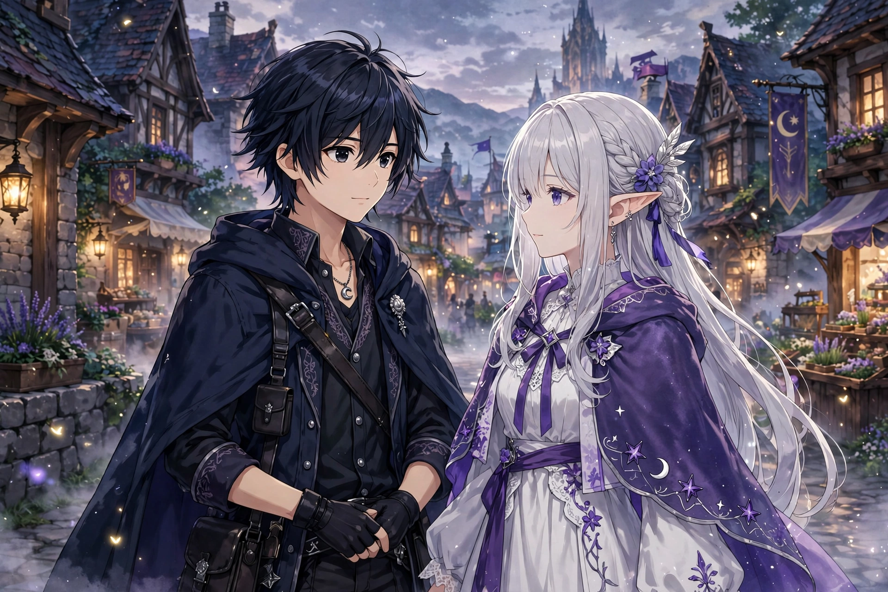

Re:Zero − Starting Life in Another World
| Re:Zero | |
|---|---|
 | |
| Author | Tappei Nagatsuki |
| Illustrator | Shin'ichirō Ōtsuka |
| Genre | Isekai, dark fantasy, time loop |
| Original run | Web novel from 2012; light novels from 2014 (MF Bunko J) |
| Anime | TV series by White Fox, 2016–present |
Re:Zero − Starting Life in Another World (Japanese: Re:Zero kara Hajimeru Isekai Seikatsu) is a Japanese light novel series written by Tappei Nagatsuki and illustrated by Shin'ichirō Ōtsuka. It follows Subaru Natsuki, a shut-in teenager transported to a fantasy world, who discovers that whenever he dies he returns to an earlier "save point" in time — an ability he calls "Return by Death" — and must use repeated loops of suffering to protect the half-elf Emilia and his other friends. The series began as a web novel on Shōsetsuka ni Narō in 2012 and has been published in print by Media Factory since 2014.
Plot
Summoned without explanation to the kingdom of Lugunica, Subaru becomes entangled in the royal selection to choose the next ruler, in which Emilia is a candidate. Each loop resets the world while Subaru alone retains his memories, forcing him to solve problems — assassinations, demon-beast attacks, the fanatical Witch Cult — through trial, error and death. The story is noted for its psychological depiction of Subaru's trauma and for deconstructing the power-fantasy conventions of the isekai genre: Subaru has no special combat ability, and progress depends on information, allies and endurance.
Media
The anime adaptation by studio White Fox premiered in 2016 to wide acclaim; a second season aired in 2020–2021 and a third season followed in 2024–2025. The franchise also includes manga adaptations, two OVA episodes (Memory Snow and The Frozen Bond), video games and extensive merchandise. The character Rem, a maid who becomes devoted to Subaru, achieved exceptional popularity, and the series has sold well over ten million copies across formats.
Reception
Re:Zero has been praised for its character writing, emotional intensity and use of the time-loop device, and it helped define the darker turn of 2010s isekai fiction. It won awards including the Sugoi Japan Award and honours at the Newtype Anime Awards and Crunchyroll Anime Awards.